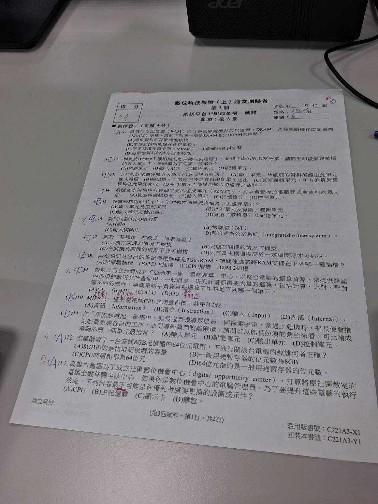

🚨 三大錯題深度剖析與盲點雷達
本頁共 13 題，學生答錯第 9、12、13 題（共扣 12 分）。以下針對錯誤成因、認知盲點與破題關鍵進行深度剖析：
🖼️ 實體試卷互動對照模式 (Original Paper Inspector)
直接點擊試卷影像上的紅色框選熱點（Q9、Q12、Q13），即可快速錨定該題的完整詳解與診斷！

❌ 錯題 9（學生選D / 正解C）
❌ 錯題 12（學生選A / 正解D）
❌ 錯題 13（學生選A / 正解D）
💡 提示：點擊上方紅框區域，頁面將平滑滾動並高亮該題！
📝 試卷批改現況與核心弱點速覽
1
第 9 題：運算單元縮寫混淆（扣 4 分）
題目明確要求「運算工作（計算、比對、配對）」，學生填答 (D) OU（輸出單元）。老師在考卷上親手紅筆標註 CU=控制、MU=記憶、OU=輸出，正解為 (C) ALU（算術邏輯單元）。
2
第 12 題：8GB 與 64 位元規格混淆（扣 4 分）
學生誤將「8GB RAM」理解為快取記憶體，選了 (A)。事實上「64位元電腦」的本質是 CPU 內部的「一般用途暫存器（GPR）位元寬度（Word Size）」，正解為 (D)。
3
第 13 題：效能瓶頸評估與審題倒置（扣 4 分）
題目詢問「最不可能優先更換以提升效能」的元件，學生雖有在試卷劃底線，卻誤選了 (A) CPU。事實上 CPU 是效能心臟，而 (D) 鍵盤 純屬輸入外設，對運算效能毫無任何影響，正解為 (D)。
📋 第 1 頁全卷 13 題題庫與名師逐題詳解
包含第 1~13 題完整題幹、ABCD 選項、學生填答對比、考點歸納與常考陷阱提示：
🚀 刷題與複習練習中心 (Practice & Drill Center)
三大專業刷題模式：錯題變形強化訓練、單題卡片沉浸刷題、以及全真 15 分鐘計時大考！
🔥 錯題弱點突破特訓營（3 題原卷錯題 ＋ 6 題概念變形題）
透過「原題重做」配合「同類題型變形挑戰」，徹底擺脫死記硬背，真正把運算單元、64位元規格與效能瓶頸徹底弄懂！
弱點攻克掌握度：0 / 9 題 (0%)
⌨️ 快捷鍵：
A B C D 作答 · ← → 切題
📚 考前高頻重點速記寶典 (Knowledge Cheat Sheet)
歸納第 3 章硬體架構核心常考圖表，考前 5 分鐘速讀神助攻：
🏛️
范紐曼五大單元對照表
| 縮寫 | 全名 | 考題關鍵字 |
|---|---|---|
| ALU | Arithmetic Logic Unit | 計算、加減乘除、比對、邏輯判斷 |
| CU | Control Unit | 解碼指令、協調指揮、發送信號（如船長、交警） |
| MU | Memory Unit | 存放程式、儲存資料與運算結果 |
| IU | Input Unit | 輸入資料（鍵盤、滑鼠、掃描器） |
| OU | Output Unit | 輸出結果（螢幕、印表機、喇叭） |
公式記牢： CPU ＝ 控制單元 (CU) ＋ 算術邏輯單元 (ALU) ＋ 暫存器 (Registers)。
⚡
SRAM 與 DRAM 終極對決
| 比較項目 | SRAM (靜態) | DRAM (動態) |
|---|---|---|
| 組成元件 | 正反器 (電晶體 4~6 顆) | 1 顆電晶體 ＋ 1 顆電容 |
| 存取速度 | 極快 (數奈秒) | 較慢 (數十奈秒) |
| 需要充電(Refresh)? | 否 (No Refresh) | 是 (需週期充電更新) |
| 每單位成本 | 昂貴 | 低廉 |
| 應用領域 | 快取記憶體 (Cache) | 主記憶體 (RAM) |
🔺
電腦記憶體階層架構金字塔
由頂至底，速度由快變慢、單位成本由貴變便宜、容量由小變大：
暫存器 (Registers) · 速度最快 / 位於 CPU 內
快取記憶體 (Cache / SRAM) · MB 級
主記憶體 (Main Memory / DRAM) · 8GB ~ 64GB
輔助記憶體 (SSD / HDD) · 容量最大 / 斷電資料不消失
▲ 速度最快 / 成本最高 / 容量最小
▼ 容量最大 / 成本最低 / 速度最慢
⚙️
電腦規格與指標大考重點
- 64 位元電腦：代表 CPU 的字組大小（Word Size）為 64 位元，即其內部一般用途暫存器能存放 64 位元長度資料，且內部資料匯流排寬度為 64-bit。
- MIPS：Million Instructions Per Second，每秒鐘執行的百萬條指令數（I 代表 Instruction）。
- FLOPS：Floating-point Operations Per Second，每秒浮點數運算次數（評估科學計算與 GPU 效能）。
- 時脈頻率 (Clock Speed)：單位為 GHz（十億赫茲，1 GHz = 10^9 Hz），代表 CPU 內部每秒鐘振盪時鐘週期數。
- 熱插拔 (Hot Swapping)：開機與關機狀態下皆可安全插拔硬體周邊（如 USB）。